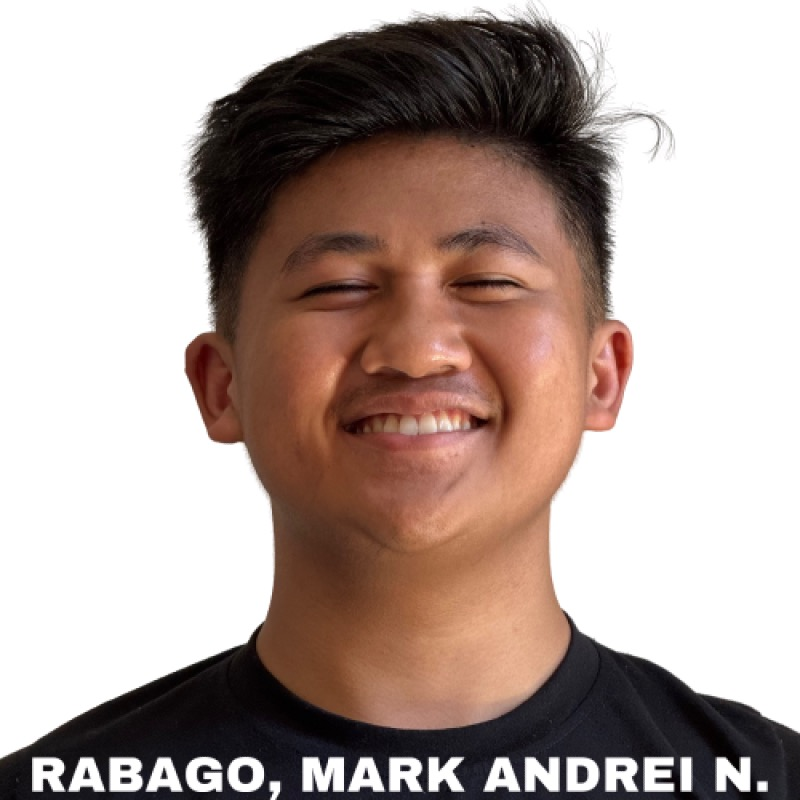

Mark Andrei Rabago

Summary
Motivated and detail-oriented student with a strong passion for learning and growing in the tech industry. Committed to delivering quality work and continuously improving skills.
Education
- Bachelor of Science in Computer Science– University of Northern Philippines (Expected Graduation: 2027)
- Senior High School – University of Northern Philippines - (Graduated: 2023)
Work Experience
-
Photojournalist - iTech
August 2023 - 2027
- Assisted with front-end web development projects
- Collaborated with team members using GitHub
- Documented Moments
Skills
- HTML, CSS, JavaScript
- Java Programming
- Responsive Web Design
Seminars & Certifications
- Certificate of Completion - Web Development Bootcamp
- Panangtubay Kinasaririt ti UNPians: Leadership Camp
Other